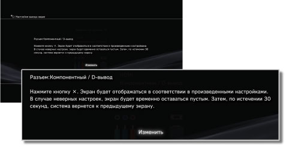
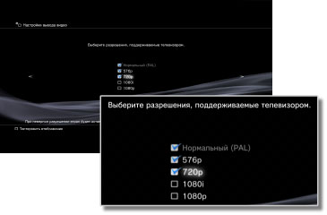
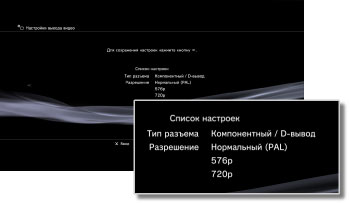

Настройки вывода видео
Выполнение настройки параметров вывода видео системы. Выбор лучших параметров вывода для используемого телевизора.
1. |
Проверьте разрешение, поддерживаемое телевизором.
Разрешение (режим видео) различается в зависимости от типа телевизора. Для получения дополнительной информации см. инструкции, прилагаемые к телевизору.
|
2. |
Выберите  (Настройки) > (Настройки) >  (Настройки экрана). (Настройки экрана).
|
3. |
Выберите [Настройки вывода видео].
|
4. |
Выберите тип разъема на телевизоре.
Разрешение (режим видео) различается в зависимости от типа используемого разъема.

| Входной разъем на телевизоре |
Поддерживаемые видеорежимы (регион NTSC) *1 |
Поддерживаемые видеорежимы (регион PAL) *1 |
| HDMI |
1080p / 1080i / 720p / 480p |
1080p / 1080i / 720p / 576p |
| Компонентный / D-вывод *2 |
1080p / 1080i / 720p / 480p / 480i |
1080p / 1080i / 720p / 576p / 576i |
| Композитное / S видео *3 |
480i |
576i |
| AV MULTI / SCART *4 |
480p / 480i |
576p / 576i |
| *1 |
Параметры видеорежима различаются в зависимости от региона приобретения системы PS3™. В Северное Америке, Азии и других регионах NTSC видеорежим 480i отображается как [Нормальный (NTSC)]. В Европе и других регионах PAL видео режим 576i отображается как [Нормальный (PAL)]. Для получения дополнительной информации см. инструкции, прилагаемые к устройству.
|
| *2 |
D-вывод в основном используется в Японии. D1-D5 поддерживает следующие разрешения:
D5: 1080p / 720p / 1080i / 480p / 480i
D4: 1080i / 720p / 480p / 480i
D3: 1080i / 480p / 480i
D2: 480p / 480i
D1: 480i
|
| *3 |
Композитный разъем используется для подключения кабеля AV, который поставляется с системой PS3™. S-Video - формат, используемый в основном в Японии.
|
| *4 |
AV MULTI - формат, используемый в основном в Японии. SCART - формат, используемый в основном в Европе. Если выбран параметр [AV MULTI / SCART], отобразится экран, на котором можно выбрать тип выводимого сигнала.
|
|
5. |
Измените настройки вывода видео.
Измените разрешение для вывода видео. В зависимости от типа разъема, выбранного в пункте 4, этот экран может не отображаться.

|
6. |
Установите разрешение.
Выберите все разрешения, поддерживаемые используемым телевизором. Видео автоматически выводится с самым высоким разрешением из выбранных разрешений для воспроизводимого контента.*
*Разрешение видео выбирается в следующем порядке: 1080p > 1080i > 720p > 480p/576p > Стандартное (NTSC:480i/PAL:576i).
Если при выполнении шага 4 выбрано [Композитное / S-видео], экран для выбора разрешения не отображается.
Если выбрано [HDMI], можно также выбрать автоматическую настройку разрешения (устройство HDMI должно быть включено). В данном случае экран выбора разрешения не отображается.

|
7. |
Задайте тип телевизора.
Выберите тип, соответствующий подключенному телевизору. Этот параметр следует задавать только при выводе по стандарту SD (NTSC:480p / 480i, PAL: 576p / 576i), например, в том случае, если на шаге 4 выбрано значение [Композитное / S видео] или [AV MULTI / SCART].

|
8. |
Проверьте настройки.
Подтвердите, что изображение отображается с правильным разрешением для телевизора. Нажав кнопку  , можно вернуться к предыдущему экрану и проверить настройки. , можно вернуться к предыдущему экрану и проверить настройки.

|
9. |
Сохраните настройки.
Настройки видеовыхода сохраняются в системе PS3™. Далее можно выполнить настройки аудиовыхода. Можно продолжить задание параметров аудиовыхода. Подробнее об аудиовыходе см. (Настройки) >  (Настройки звука) > [Настройки аудиовыхода] в настоящем руководстве. (Настройки звука) > [Настройки аудиовыхода] в настоящем руководстве.
|
Подсказки
- Кабель, который требуется для вывода конкретного видеорежима, может не поставляться с устройством и, возможно, потребуется приобрести его отдельно. Для получения дополнительной информации см. документацию, прилагаемую к системе.
- Если настройки вывода видео не соответствуют требующимся для используемого телевизора настройкам, при изменении разрешения экран может быть пустым. Однако, через некоторое время экран должен автоматически возвратиться к исходному разрешению. Если экран остается пустым более 30 секунд, выключите систему. Затем нажимайте кнопку питания на передней панели системы не менее пяти секунд, чтобы снова включить систему. Будет выполнен автоматический сброс настроек вывода видео до стандартного разрешения.
- Если устройство, не соответствующее стандарту HDCP (High-bandwidth Digital Content Protection), подключается к системе с помощью кабеля HDMI, система не может выполнять вывод видео и/или аудио.
- Защищенные авторским правом диски Blu-ray, содержащие видео, могут выводиться только с разрешением 1080p с помощью кабеля HDMI, подключенного к устройству, совместимому со стандартом HDCP.